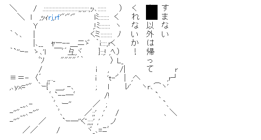
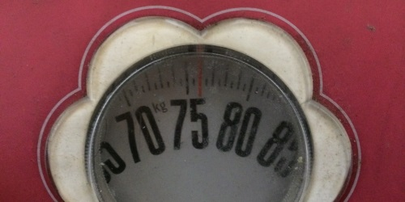
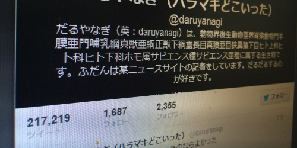
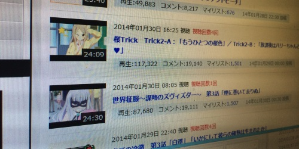
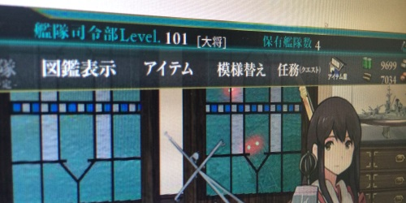

株式会社 Impress Watch・窓の杜編集部を退職しました。
執筆日時：
1月31日付けで退職いたしました。在職中はご迷惑をおかけしたことも多々あるというか、喋りまくったり貧乏ゆすりしたりで迷惑そのものであったかもしれませんが、今後も生暖かい目で見守っていただければ幸いです。
（@shibayan 撮影、@tworks 加工。多謝）
話はここで終わりなので、もう読まなくてもいいです。

窓の杜でやったことと得たもの
まぁ、ほとんどライティングばっかりで、ひたすら記事を量産するだけの日々だった。初めての記事が
だったので、6年ちょっとになるのかな（引き算あってます？）。辞めるまでに 2589 本の記事を書いたことになる*1。多いような、少ないような、そんな気分。
窓の杜に来る以前は父の（傾きかけた）会社を手伝って、基礎工事*2の現場に出たり、一人でクレーンでトラックに鉄筋積んで*3現場まで運んだり、経理やったり、そんな感じで暮らしていた。それはそれで充実していたのだけど、ぶっちゃけ、お給料もらってなかったし、しんどかったし、休みもなかったし、キリのよいところまでやったらさっさと辞めてやろうと思っていた。
そして、そのときがきた。借金もあらかた返せそうだったし、一生この仕事をやるつもりもなかった。ただ、辞めたいって言っても通じそうになかったので、オペレーターをやってた弟を現場でぶん殴ってフケた（なんか偉そうにしていたので）。我ながらサイテーだと思う。今は割りと仲良くしているけれど。
さて、こうして自由は得たものの、とくにやりたいこともない。ただ、強いて言えば“普通のサラリーマン”というものをやってみたかった。土日が休みで、月末にはお給料が勝手に振り込まれていて、有給休暇がとれて、怪我したら労災があって、辞めたら失業保険がでるヤツ。なにより、デスクワークな！ 朝5時に起きて現場行くとかもうやだぽ。
そうしたらたまたま PC Watch で募集があったので（わりと PC 系のことは好きだったので読んでた）応募してみた。ほかにも GIGAZINE にも応募した気がする。結局、PC Watch はダメだったのだけど、窓の杜だったら欠員があるという話だったので、そっちに行くことになった。面接で移動式クレーンの操縦方法について熱く語った記憶があるけれど、今となっては何かの間違いであってほしいと思う。
結局、入社したのは2007年の7月の終わりぐらいだったかな。
窓の杜に来てはじめたやったのは、半組みのまま放置された PC を組み立てて、メールだのなんだのの設定をすること。これはお茶の子さいさいだった。大学生のころは PC の自作ぐらいやってた。まぁ、流行ってたし、あのころは自作したほうが安かったので。そのあとは窓の杜ライブラリの更新チェックとアップデート作業なんかを1か月ぐらいやらされて、そのあと少しずつ記事も書くようになった。昔は Delphi で遊んでたりしていたので、オンラインソフトの世界に関わるのは割りと好きだ。むしろ文系人間のハード音痴だったので PC Watch じゃなくて助かったと思ったぐらいだ。
ただ、いつまでたってもアルバイトだの契約社員だのという立場から抜けられないことには閉口した。成果あげてたらそのうち勝手にあげてくれてくれんだろうと思ってたら大間違い。ことあるごとに上長に「なんとかしてくれーやめちゃうぞー」と言わなきゃいけないのがイヤだった。そんなわけで、窓の杜には愛着があるけれど、会社に対して忠誠心のようなものはついぞもてなかった。
そんなわけで、働き方も途中から変えた。
たとえば、さっさと帰るようになった。飲み会でもなければ6時には帰る（ちなみに、来るのは早くて11時だ）。できるだけ早く帰れば、時間当たりの賃金は上昇する。ネタのチェックやテストは家でビール飲みながらやることにして、会社にいる時間は極力減らした。アウトプットを減らさずに、サボって楽しむように心がけた。めんどくさい定型作業は、それが好きな人に任せることにした。余った時間は居酒屋で本を読んだり、家でプログラミングして遊んだりすることに使った。
あと、企画を練って会社に旅費を出してもらい、国内をあちこち旅行してみたりもしてみた（窓の杜だとあんまり外に取材をしに行く機会がない）。これは各地の IT 勉強会コミュニティを取材するという奴だったのだけど、個人的にかなり楽しめた。地方の美味しいものが食べられて、しかもいろんな人と知り合いになれる。割りと一石二鳥三鳥の策だったのだけど、PV はそれほどとれなかった気がする。ただ、その業界や地域のリーダー的なひとに媒体を認知してもらったり、自分の知識の足りない部分を補ってもらえたり、好奇心が刺激されたりしたのは割りと収穫だったと今でも思う。
まぁ、そんな感じ。
ながなが書くのがめんどくなってきたので、ここで自分がほかに窓の杜で得たものを羅列しようと思う。
おちんぎん
最終で年収400万ぐらい。正社員じゃなかったときはボーナスなかったからほんと寒かった。
10kg の体重

会社入ったときは 65kg だった（身長は 168cm）。死にたい。
20万ツイート

たぶん PC Watch かな、どこかが廃棄したモニターを拾ってきて、Twitter 専用のサブモニターにしてつぶやきまくっていた。Twitter に精通していないとクライアントの記事書けないからな！
アニメ観るようになった

昔もガンダムだのカウボーイビバップだのは好きだったけれど、土方時代を経てまったく見なくなった。そもそも TV をあまり見ない。それでも編集長が割とアニメ好きっぽい感じで変な電波にやられたのと、@koizuka さんに会ってからニコ動のプレミアム会員になってからよく観るようになった。将棋も好きなので、割りとみている。
ちなみに今期は表向き「凪のあすから」の展開が超気になるーーーッ！ と言いつつ、裏では「桜Trick」観ながら悶死している。俺みたいな汚いおっさん、みんな死んで、世の中が美少女だらけだったらいいのに。
提督レベル 101

艦これに精通していないと艦これの（ｒｙ
某 Watch の営業さんに教えてもらって始めたのだけど、気が付いたら武蔵をゲットしてた。ちなみに嫁は榛名さんで、翔鶴姉さんとお風呂に入りたい感じ。
理解のある上司と友人たち
とりあえずそういっておくとカブが上がると聞いた。
なぜやめようと思ったのか
理由は割りと複合的なのだけど、腑分けしてみればこんな感じかな。
窓の杜の新陳代謝
何年も同じ人間が記事書いてるのはマンネリ化してよくないと思う。できれば若い子とか、女の子とか、編集部にない視点を持つ人をいれてほしかった。新しい人はそのどっちでもないかもしれないけれど、とりあえず“新しいこと”をやってほしいなって期待してる。ウチ（っていうか、もうソトだけど）は部署間の移動とかもないしね。
もういなくていいと思った
新しい人を入れるためには、誰かが外に出なきゃいけない。部署の人数を増やしてくれるほど、ウチは儲けてないし、ウエのひとも寛容じゃないのはよく知っている。
じゃぁ、誰が出るの？ 僕でしょ！ ライティングだけだったら会社来なくてもできるし。
だいたい、いずれ窓の杜が社会的に必要とされなくなって事業を縮小していかなきゃいけないとき、「誰が先に辞めるの？」っていう話になると思うのだけど、その場には居合せたくない（妄想しすぎだろうか？）。会社はどうでもいいけど、部署には割りと愛着あるしね。もしかしたら生き延びる道を探り当てて長生きするかもしれないけれど、どうだろう、もしかしたらそのとき自分は邪魔になるかもしれないって思う。この予感を深く掘り下げてみてもいいけど、これ以上エントリが長ったらしくなるのはウザいし、ここに書くべきことでもない気がする。
まぁ、書いてて自分でもよくわからんけど、要は「外で生暖かい目で見守る」ポジションに移りたくなった。
たぶん、それには今のタイミングがいいと思う。窓の杜は新人が仕事に慣れるまでの間サポートしてくれるライラ―がいれば便利だろう。僕は僕で、新しい食い扶持をみつけるまで片手間にライターができればうれしい。だから、今ならいい感じで抜けることができる。そのままフェードアウトしていくならそれでもいいし、腐れ縁みたいに続いていくならそれはまたそれ。
自分ばっかり書いてたらツールとか開発系とか、そういうジャンルに偏ってしまうし、あんまり頑張りすぎるのは窓の杜にとってかえってよくない。読んでる側とて、つまらんだろう。自分が必要なのかどうか、価値があるのかどうかは他人にしかわからないので、他人に判断してもらうのがいい。だから、ソトにいるほうがいいと思う。周りのテンポに合わせて仕事するのも面倒くさいし。
地方に脱出
これはプライベートな事情なのだけど、父の面倒をみてあげたい。もう十分頑張ったんだから、いい加減引退してのんびり人生を楽しんでほしい。
けれど、今の収入で東京で頑張るのはぶっちゃけキツい。かといってこれから収入が劇的に上がることは見込めないので、地方に出て生活費（支出）を削ることにした。家も安いから自分の稼ぎでも頑張ればなんとか買えそうだし、東京や大阪に出るにも最近は飛行機が安いから何とかなるだろう。3か月に1回ぐらいは東京に出て、勉強会に出たり、みんなで酒飲んだりしたいね。
そんなわけで愛媛・松山に行くつもり。なぜ松山なのかについてはまた改めて書いてみたい。
これからどうするのかについて
なかには次の職場を決めてから辞める人もいるけれど、自分はそこまで器用じゃないのでなにも決めてない。編集長がやってくれと言う間は今まで通り記事を書きながら、いろいろチャレンジしてみようかなと思う。来年は34歳なので、人生を変えたいと思えば最後のチャンスだろうと思うし。一芸を身に着けるにも、なにか事業をするにも、新しい土地に溶け込むにも、20年ぐらいは最低かかるだろう。そろそろ腰を落ち着けて、爺さんになる準備をしたいと思う。
とりあえず、人生で初めてハローワークに行くのが楽しみだ！
P.S.
お仕事ください。